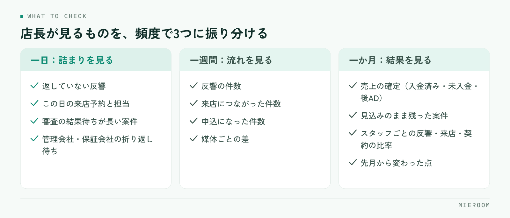

店長になった直後にいちばん困るのは、やることが多いことではありません。何をどの頻度で見ればいいのかが決まっていないことです。目の前の接客に入れば一日は終わりますが、それだけでは店の数字は動きません。見るものを一日・一週間・一か月に振り分けておくと、同じ時間でも手が届く範囲が変わります。
この記事の結論
店長の仕事は、頻度ごとに見るものを決めて、毎回同じ項目を見ることで軽くなります。一日は動いている案件の詰まり、一週間は反響から来店までの流れ、一か月は売上の確定とスタッフごとの差。毎回違う項目を見ていると、気づくのが遅れます。
店長の仕事は、見る順番が決まっていないと重くなる
店長の仕事を並べると、接客、スタッフの指導、物件の確保、管理会社やオーナーとのやり取り、売上の管理、シフト、クレームの対応と、きりがありません。すべてを同じ重さで持つと、結局は目の前で声が大きいものから手を付けることになります。

ここで起きるのが、急ぎの仕事に一日が埋まり、気づける仕事が後回しになる状態です。申込が止まっている案件、連絡が返っていない反響、成績が落ちているスタッフ。どれも今日困るわけではないので、明日に回ります。そして困る形になって現れたときには、手を打つには遅い状態になっています。
防ぐ方法は、見る項目を頻度で固定することです。毎日見るもの、週に1回見るもの、月に1回見るもの。これを決めてしまえば、判断の回数そのものが減ります。見落としを人の記憶力で防ごうとしないことが出発点です。
一日：朝に見るもの、夕方に見るもの
一日のなかで店長が見るのは、動いている案件が詰まっていないかだけです。この日の売上を気にしても動きません。
朝に見るものを挙げます。
- 前日に入った反響で、まだ返していないものがあるか
- この日の来店予約と、担当が決まっているか
- 申込中の案件で、審査の結果待ちが長くなっているものがあるか
- 管理会社・保証会社からの折り返し待ちになっているもの
夕方に見るものは、朝に挙げたものが動いたかどうかです。返したか、来店につながったか、審査が進んだか。ここで止まっているものだけを拾えば、翌朝に持ち越す数が減ります。
やってはいけないのは、朝礼で前日の売上を読み上げて終わることです。数字の報告は状況の共有にはなりますが、詰まりは見つかりません。見るのは金額ではなく、止まっている案件の件数です。
一週間：反響から来店までの流れを見る
週に1回見るのは、入口から出口までの流れです。反響が何件入って、何件が来店につながり、何件が申込になったか。これを週単位で並べます。
ここで分かるのは、どこで落ちているかです。反響が少なければ集客の問題、反響はあるのに来店が少なければ一次対応の問題、来店はあるのに申込が少なければ接客か物件の問題。原因の置き場所が違えば打ち手も変わるので、まとめて「売上が足りない」と見ないことが大事です。
もう一つ週次で見たいのが、媒体ごとの差です。どの媒体からの反響が来店まで進んでいるかを見ると、広告費の掛け方の判断材料になります。見方は反響の管理方法にも整理しています。
「余裕があるときに見る」にすると、忙しい週ほど見なくなります。繁忙期に見なくなるのがいちばん困るので、曜日と時間を決めて予定に入れてください。10分でも、毎週同じ項目を見ることのほうが効きます。
一か月：売上の確定と、スタッフごとの差
月に1回見るのは、確定した数字とスタッフごとの違いです。週次が流れを見る作業なら、月次は結果を確かめて配り方を考える作業になります。
見る順番は次のとおりです。
- 今月の売上が確定したか（入金済み・未入金・後ADの未回収を分ける）
- 見込みのまま残っている案件が、翌月に動くのか落ちたのか
- スタッフごとの反響数・来店数・契約数と、その比率
- 先月から変わった点があるか
ここで見込みと確定を混ぜないことが、いちばん間違いを防ぎます。申込が入った時点の金額をそのまま売上として数えていると、キャンセルや審査落ちのたびに数字が後から動き、翌月の目標設定が狂います。
スタッフごとの差は、件数より比率で見てください。反響を多く持っている人の契約数が多いのは当然で、見たいのは反響に対して何件来店につながり、来店に対して何件申込になったかです。比率で見ると、どこを教えればいいかが絞れます。並べ方はスタッフの成績管理にまとめています。
自分でやることと、任せることの分け方
店長が全部を抱えると、店は店長の処理能力で止まります。分け方の基準は役職ではなく、その仕事が止まったときに外に影響が出るかです。
| 仕事の種類 | 扱い方 |
|---|---|
| 判断が必要なもの（条件の交渉、クレームの最終対応、例外の可否） | 店長が持つ |
| 期限があり、遅れると取引先に影響するもの（審査の依頼、契約書類の手配） | 担当を決めて任せ、期限だけ店長が見る |
| 手順が決まっているもの（物件情報の入力、反響の一次対応、資料の作成） | 任せる。手順書があれば引き継げる |
| 数字をまとめる作業（売上の集計、成績の集計） | 手で集計しない形にする |
任せるときに必要なのは、判断の基準を先に渡しておくことです。「この範囲までは自分で決めていい、超えたら相談」が言語化されていないと、スタッフは全部を確認に来るか、勝手に決めて後で問題になるかのどちらかになります。手順を渡す形は業務マニュアルの作り方が参考になります。
売上や成績の集計を誰かに任せても、店の手間は減りません。集計している間は数字が見えず、出てきたときには月が変わっています。これは人を割り当てる仕事ではなく、入力した時点で見える形にする仕事です。
よくある失敗：全部を見ようとして、どれも見ていない
店長になって気合が入っている時期に起きやすいのが、毎日すべての数字を見ようとすることです。日次で売上、日次でスタッフ成績、日次で媒体ごとの反響。これは続きません。そして続かなくなったときに、見る習慣そのものが消えます。
もう一つ多いのが、数字を見る目的が「報告のため」になることです。本部や経営者に出す資料を作ることが目的になると、作った時点で終わり、打ち手につながりません。見るのは自分が次に何をするかを決めるためです。
逆に、繁忙期だけ数字を見るのも遅れます。繁忙期に打てる手は限られており、仕込みは閑散期にしかできません。閑散期に何をするかは閑散期にやること、繁忙期の目標の立て方は繁忙期の売上目標に整理しています。
店長も接客に入るべきですか？
スタッフの成績を本人に開示したほうがよいですか？
店長になったばかりで、何から手を付ければよいですか？
まとめ：頻度を決めて、毎回同じ項目を見る
賃貸仲介の店長の仕事は、一日・一週間・一か月で見るものを振り分けると軽くなります。一日は動いている案件の詰まり、一週間は反響から来店・申込への流れと媒体ごとの差、一か月は売上の確定とスタッフごとの比率。毎回同じ項目を見ることで、変化に気づけるようになります。
任せる基準は、判断が必要かどうか。手順が決まっているものは渡し、集計作業は人に割り当てずに見える形へ寄せる。店長が抱えるべきは判断で、作業ではありません。
案件の詰まりと売上の確定、スタッフごとの反響・来店・契約を同じ画面で追える形にしたい場合は、ミエルームの売上管理・接客管理の画面をご覧ください。いまお使いのExcelデータのインポートと初期設定の代行にも対応しており、デモアカウントを発行して店舗の運用に合うかどうかからご確認いただけます。